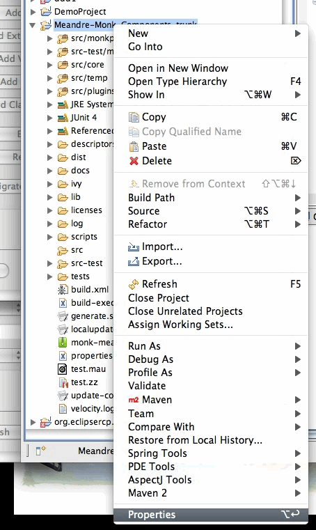
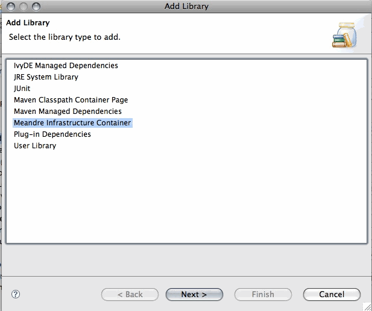

Meandre Component Plugin provided a component classpath container with support for Version 1.3 and 1.2 of the server libraries. This component classpath container can be added to existing projects by clicking on the project property in the context menu of the project as show below
Click on the Add Library option in the Java Build Path -> Libraries tab and Select the Meandre Infrastructure container
Select the container version
The set of libaries that support the container get added to the project classpath under MEANDRE-INFRASTRUCTURE -$VERSION group
The final project should look something like below.